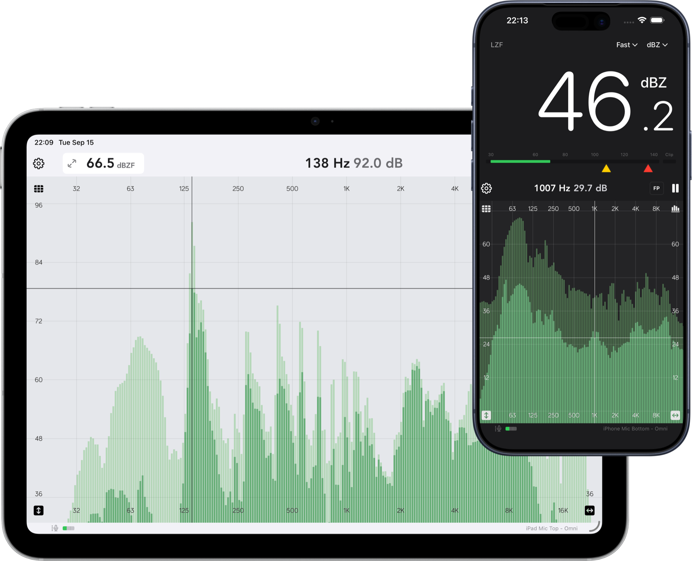
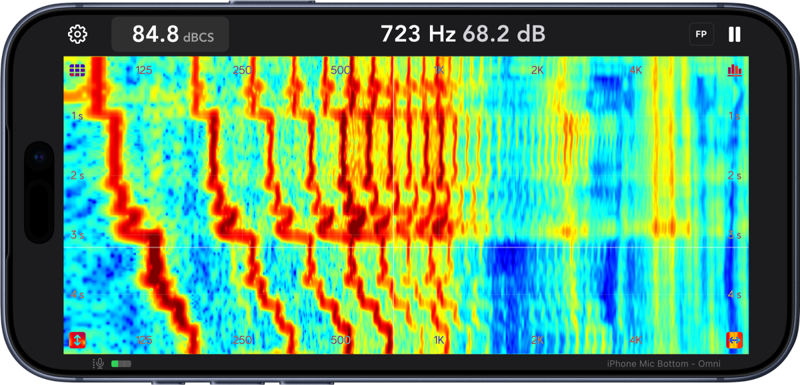
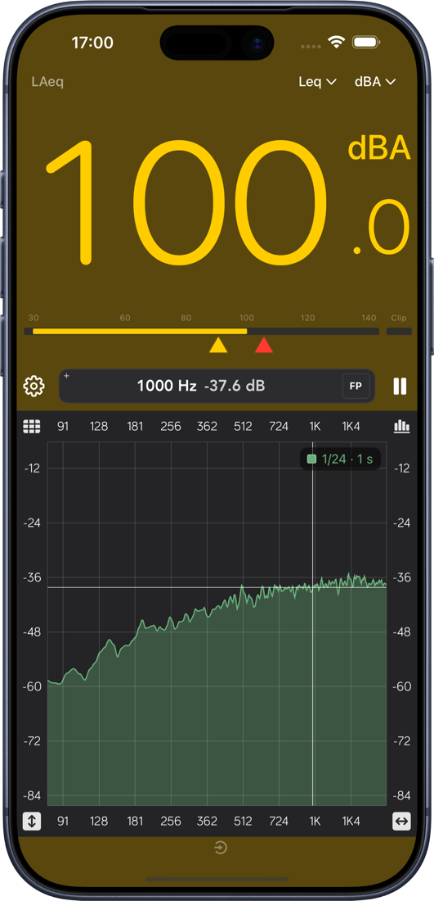
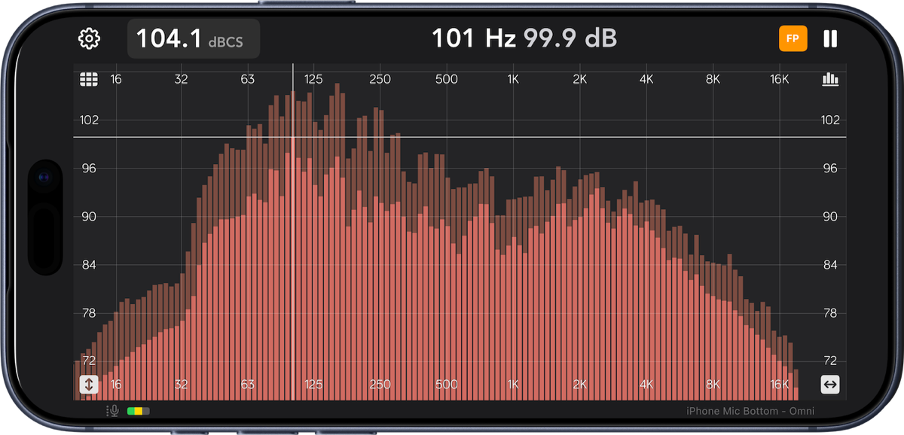

Three ways to look
Classic bar graph, smoothed line with fill, or spectrogram. Switch views without losing your place.
RTA · SPL meter · Spectrogram
Spectrum Eye turns your iPhone or iPad into a live real-time analyzer — a high-resolution spectrum, an IEC-style SPL meter, and a scrolling spectrogram, all from the built-in mic or your audio interface.
iPhone & iPad · Audio is analyzed on your device, never uploaded.

Built for the gig
No project files, no setup screens. Open the app and the room is already on screen — then tighten resolution, weighting and ballistics until the answer is obvious.
Classic bar graph, smoothed line with fill, or spectrogram. Switch views without losing your place.
IEC-style Fast, Slow and Leq ballistics with A/C/Z weighting, peak hold and per-route calibration.
Measurement mode bypasses iOS voice processing — no hidden high-pass, no limiting. Import your mic's correction file.
See frequency over time
Rumble that comes and goes, a ring that only blooms on certain notes, an HVAC cycle behind the mix — the scrolling heat map shows it. Slide the cursor to read exact Hz and dB at any point, choose your palette, and set the min/max that matter.
All analyzer options
Know before it hurts
Set a yellow warning and a red limit per frequency weighting. The readout takes over the screen as levels climb, so you can see the number from behind the console — or from across the room.
How the SPL meter works
Who it's for
Spectrum Eye started as a personal tool — written by a sound engineer who was unhappy with the existing options and eventually built his own.

“By far the best and smoothest RTA out there.”
“Simple, fast and precise.”
“What I like is how it turns off all the iPhone's mic processing, HPF & limiting.”
Ready when you are
One download, no account, nothing to configure. Bring your own mic — or start with the one already in your phone.